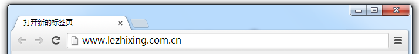
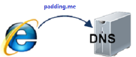

The ABC of Front-end Web Development
@PaddingMe
2015-02-04
Some Tips
由于个人资历，能力，知识面，以及 身高 有限，
说得不对、未说明白、有疑问的地方，请随时打断我。
但是，请不要扔臭鸡蛋，和烂茄子。
因为，我比较喜欢吃菠菜和香蕉。 =.=

Awesome Front-end Works
What Happens When You Type in a Url in Browser ?
——From Front-end perspetive
1. 在浏览器里输入要网址
2. 查找域名 IP 地址
- 浏览器缓存
- 系统缓存
- 路由器缓存
- ISP DNS 缓存
- 进行递归搜索
TCP 三次握手
---> 「你瞅啥？」
「瞅你咋地？」 <----
-->「来咱俩唠唠。」
然后就唠上了。
Reference
- 从输入 URL 到页面加载完成的过程中都发生了什么事情？
- 从输入网址到显示页面：浏览器工作原理拆解分析
- How Browsers Work: Behind the scenes of modern web browsers
- What happens when...
- what happens when you type in a URL in browser
- What happens when you type a URL in browser
- How Does the Internet Work?
- 当你输入一个网址，实际会发生什么?
- 浏览器的渲染原理简介
- 专题：浏览器:渲染重绘、重排两三事
- 浏览器加载和渲染HTML的顺序以及Gzip的问题
- http://div.io/topic/591
- http://div.io/topic/736
- http://div.io/topic/811
Fuck Things, Take away!
Happy（Hey）New (Cutter) Years(Boy)!
前端人生
为需求而生，为用户而死，为浏览器奋斗一辈子
吃 CSS 亏， 上 JS 的当，最后死在兼容上。
Q & A
<thank-you>
Powered By reveal.js